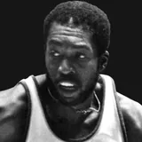

Alex Morales
Age
28
born Nov. 21, 1997
NBA seasons
2
2025-26 to 2026-27
Games
9
regular season
Per game
1.4
1.4 points · 1.0 rebounds
Life
- Born
- Nov. 21, 1997, in Paterson, New Jersey
- Age
- 28 (as of Nov. 7, 2026)
- Height
- 6'6" (height and lifespan)
Teams
regular-season games| Orlando Magic | 2025-26 to 2026-27 | 2 | 9 |
Born the same year (1997)
Also born on November 21
